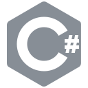

Will Rochira
Experienced freelance programmer with a diverse science background. Currently a postgraduate research student with York Structural Biology Laboratory at the University of York, researching computational methods in structural biology.
This website is a minimalistic portfolio of my recent projects, and a brief overview of me.
Recent Projects

A cross-platform mobile application that finds the nearest reputable taxi firms to a location specified via GPS or search query.
The application was written in C#, developed using Xamarin and Visual Studio.
Google Play Store Apple App Store App WebsiteA MacOS application that determines the most likely answer to a question from a live quiz game (HQ Trivia). Given that the quiz only gives the user 10 seconds to answer each question, a prospective answer must be shown to the user as quickly as possible.
The program was written in Swift, developed using Xcode.
A portable Windows (.NET) application that automates cryptocurrency trades. The trades are synchronised across multiple clients once certain market conditions are met.
The GUI was written in C#, developed using Visual Studio, with backend processes written in Node.js and PHP.
Education
MSc by Research - Chemistry
Computer Science
BSc - Biochemistry
A levels
Biology, Chemistry, Physics, Mathematics
(and Further Mathematics AS)
Professional Experience
Web Developer and Server Administrator
Responsible for server administration and fullstack web development. This includes the setup and management of a mySQL database system, as well as creation and maintainance of various other tools, written in PHP, Django, and Ruby on Rails.
Contracted Software Developer
Has involved the creation of at least 10 pieces of software, spanning from Python programs to fully-fledged MacOS GUIs, written in SWIFT. Due to the commericial nature of these projects, they are not listed here or on my GitHub page.
Research Experience
Programmatic analysis of low-SNR atomic force microscopy data
Developmed a number of fully- and semi- automated algorithms that fit models to high-noise AFM traces at forces on the scale of 10s of piconewtons, before performing detailed statistical analyses.
Skills
-
